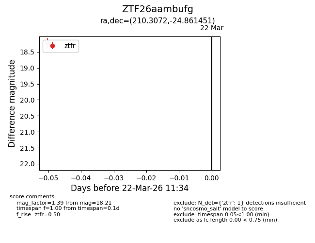
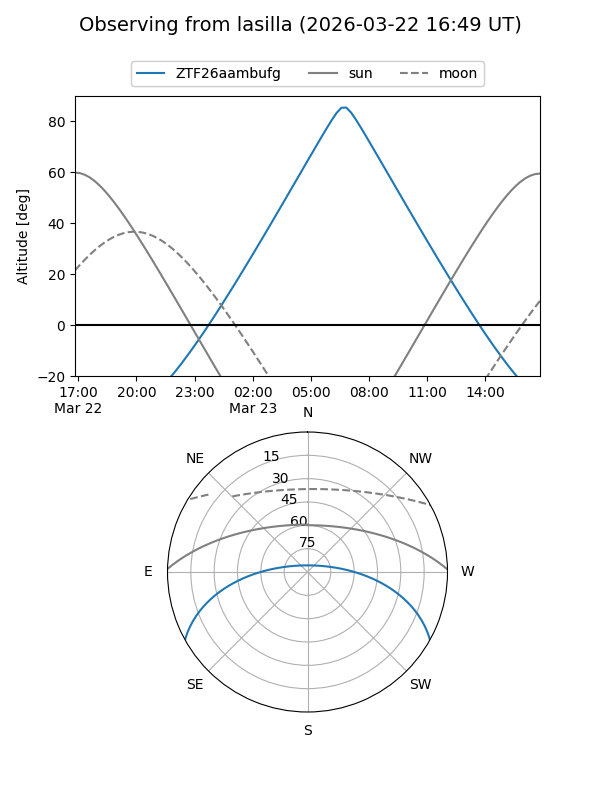
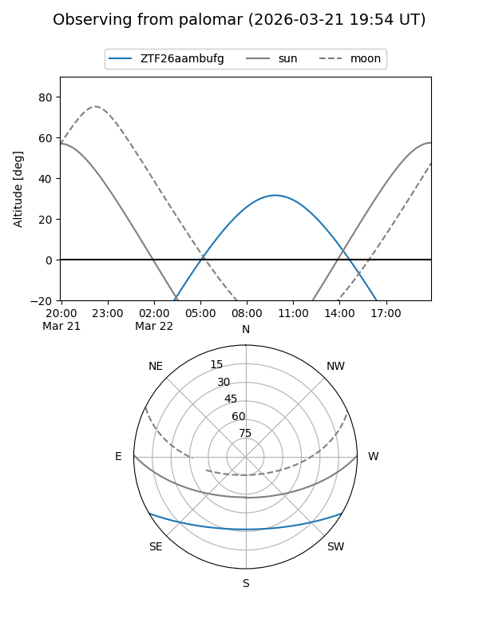
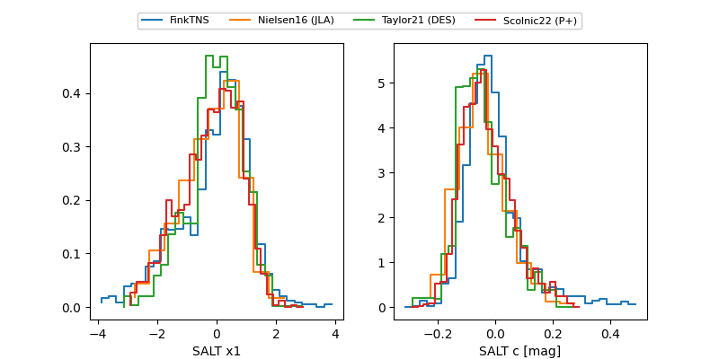

ZTF26aambufg
Target ZTF26aambufg at 2026-03-22 11:36
Aliases and brokers:
FINK: link
Lasair: link
ALeRCE: link
alt names
ZTF26aambufg (ztf,fink_ztf)
Coordinates:
equatorial (ra, dec) = 210.3072,-24.86145
equatorial (HMS+DMS) = 14:01:13.73,-24:51:41.22
galactic (l, b) = (322.4173,+35.35566)
Flags:
Photometry:
last ztfr=18.21
1 ztfr detections
Lightcurve

Visibility


Additional plots
